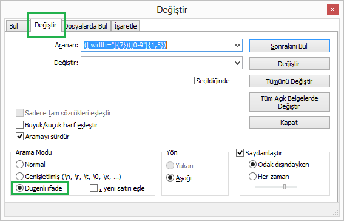

Notepad++ ve düzenli ifadeler (regular expressions) kullanarak html tablosundaki width değerlerini nasıl temizleyebiliriz, görelim.
Aşağıdaki gibi bir HTML tablosu var ve bu tablodan width özelliğini değerleriyle beraber silmek istiyoruz.
<table>
<tbody>
<tr>
<td width="262"></td>
</tr>
<tr>
<td width="82"></td>
<td width="25"></td>
<td width="43"></td>
<td width="25"></td>
<td width="61"></td>
<td width="26"></td>
</tr>
<tr>
<td width="82"></td>
<td width="25"></td>
<td width="43"></td>
<td width="25"></td>
<td width="61"></td>
<td width="26"></td>
</tr>
</tbody>
</table>
Yedek Al
Olası istenmeyen senaryolara karşı yedeğinizi alın.
Değiştir Penceresini Aç
Ctrl + F tuşlarına basarak arama penceresini açın ve Değiştir sekmesini aktifleştirin. Pencede arama modunu Düzenli ifade olarak belirleyin.
Düzenli İfade Yaz
Değiştir penceresinde Aranan: bölümüne düzenli ifadeyi ekleyin.
Değiştir: bölümünü boş bıraktık, çünkü biz değerleri değiştirmek değil silmek istiyoruz.
Düzenli İfade
([ width="]{7})([0-9"]{1,5})
Düzenli İfade (Açıklamalı)
/* --------------------------------------------------
Tablodaki başlangıç ifadeleri hep şu şekilde:
<td width:"85">
Yani başta bir boşluk var sonra width:"
şeklinde bir ifade var.
Ardından iki haneli bir sayı geliyor.
Bu sayı, duruma göre 3 ya da 4 haneli olabilir.
En sonda da " karakteri var.
-------------------------------------------------- */
/* --------------------------------------------------
Yukarıdaki bilgilere göre benim boşluk ile başlayan ve
1 karakterden oluşan bir metnim var ve boşluktan sonra
gelen ifade hep width=" şeklinde tam olarak
7 karakterden oluşan bir metin parçası.
-------------------------------------------------- */
([ width="]{7})
/* --------------------------------------------------
İkinci gruptaki elemanlar ise sadece sayılardan
ve " karakterinden oluşuyor. Bu karakter grubu da
en az 1 an fazla da 5 haneli olabilir.
-------------------------------------------------- */
([0-9"]{1,5})
{kind=link}